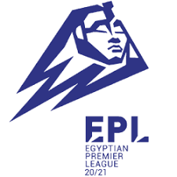

The Egyptian Premier League (Arabic: الدوري المصري الممتاز) is a professional association football league in Egypt and the top level of the Egyptian football league system. The league comprises 18 teams since the 2015–16 season and operates on a system of promotion and relegation with the Egyptian Second Division. Seasons mostly run from August to May. Unlike most other leagues, all games are played all over the week. All of the Egyptian Premier League clubs qualify for the Egypt Cup. The winner of the Egyptian Premier League qualifies for the Egyptian Super Cup.
70 clubs have competed in the Egyptian Premier League since its founding in 1948. Al Ahly have won the title 42 times, more than any other club. Only six other clubs have won the league before; those clubs are Ghazl El Mahalla, Ismaily, Al Mokawloon Al Arab, Olympic Club, Tersana and Zamalek. The Egyptian Premier League is one of the top national leagues, ranked third in Africa according to CAF's 5-Year Ranking for the 2019–20 season, based on performances in African competitions over the past five seasons.